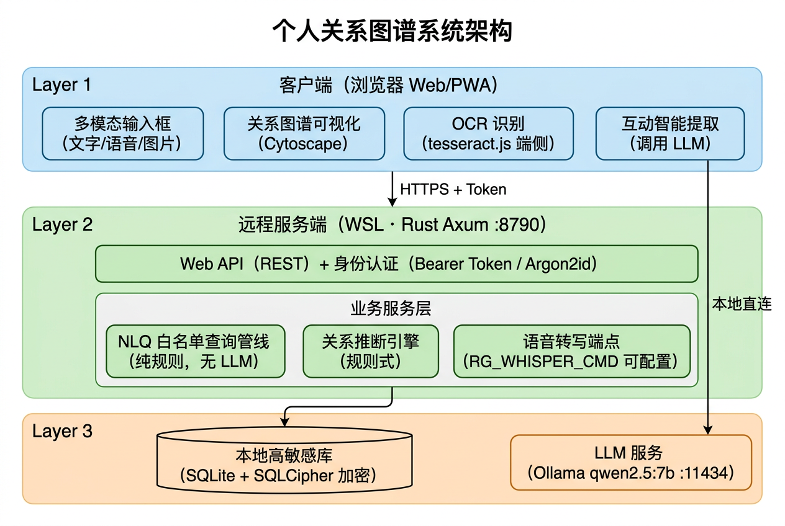

更新日期：2026-08-01（演示版）
架构版本：WSL 服务端 + Web 多端架构（2026-07 迁移完成）
本轮新增：首页多模态输入框（文字/语音/图片 OCR）、联系人"关系网络"焦点模式、学校/项目字段与推断规则增强、内置演示数据、NLQ 多意图扩展（新增/更新/互动/路径）、多主题切换
Relationship Graph（个人关系图谱） 是一款面向个人的人脉管理应用，核心能力是：

系统的所有数据处理均在您自己的服务器环境中完成，不依赖任何外部云服务。具体来说：您通过浏览器或手机输入信息（支持文字、语音、图片三种方式），这些信息只会发送到您自己部署的服务器上进行处理。图片文字识别（OCR）甚至直接在您的浏览器中完成，图片不会离开您的设备。所有数据最终存储在您服务器上的加密数据库中（技术细节：SQLite + SQLCipher 库级加密）。系统使用的 AI 大模型（Ollama）同样运行在您自己的服务器上，仅用于从聊天记录中提取关键信息，不会将任何数据发送到外部网络。
Windows 浏览器 / 手机（局域网）
│ HTTP + Bearer Token
▼
React Web 前端（Vite，端口 1420）
│ REST API
▼
Rust Axum 服务端（WSL，端口 8790）
│
▼
SQLite + SQLCipher 加密库（Argon2id 派生密钥）| 层 | 技术栈 | 说明 |
|---|---|---|
| 前端 | React 18 + TypeScript + Vite + Tailwind CSS + Cytoscape.js | 支持 Windows 浏览器与手机经局域网访问 |
| 后端 | Rust Axum + rusqlite/SQLCipher | 运行于 WSL，端口 8790（RG_PORT 可覆盖） |
| 数据 | SQLite + SQLCipher 库级加密 | 数据目录 ~/.local/share/relationship-graph（RG_DATA_DIR 可覆盖） |
| AI | Ollama 本地 LLM（qwen2.5:7b） | 互动文本信息提取；运行在用户自己的服务器上，数据不外传 |
| OCR | tesseract.js（端侧 WASM） | 中英文图片文字识别，模型文件本地托管于 public/tesseract/ |
说明：
src-tauri/为早期 Tauri 桌面原型，业务逻辑已全部移植到server/，目前保留但不再使用。
本系统在设计上将数据隐私放在首位，以下是核心安全保障：
# 后端（WSL）
cd server && cargo run
# 前端
npm run dev # Vite 开发服务器，监听 0.0.0.0:1420/api/auth/migrate）db.key）qwen2:7b → qwen2.5:7b），AI 提取恢复真正生效四步导入向导（上传 → 字段映射 → 预览确认 → 导入报告）：
test-data/联系人测试数据_1000.xlsx）应用默认进入全新极简首页，居中大输入框支持三种输入方式：
POST /api/voice/transcribe 转写；服务端未配置转写引擎时给出友好提示，不会静默失败查询统一走既有 NLQ 白名单管线（不经过 LLM），高敏感联系人在结果中自动脱敏。旧版功能入口（联系人 / 图谱 / AI 查询(旧) / 导入）收纳为页面底部的灰色调试链接，不干扰主流程。
查询结果中的联系人卡片支持点击直接跳转到该联系人的详细信息页面，操作路径：
交互细节：
规则推断引擎（server/src/infer.rs）共五条规则，全部产出可解释的推断理由（如"同一公司：万科"）：
| 规则 | 置信度 | 关系类型 |
|---|---|---|
| 同一公司 | 0.8 | colleague |
| 同一介绍人介绍认识 | 0.6 | other |
| 同项目 🆕 | 0.6 | other |
| 同学校 🆕 | 0.5 | other |
| 同行业标签 + 同城 | 0.5 | other |
详见 docs/AI查询功能现状分析.md，要点：
qwen2:7b → qwen2.5:7b），互动提取从长期降级恢复为真正生效多功能自然语言输入：首页输入框现支持 5 种操作意图，系统自动识别：
| 意图 | 示例 | 说明 |
|---|---|---|
| 查找联系人（默认） | "谁在做地产"、"关系比较近的人" | 走既有 NLQ 白名单管线 |
| 新增联系人 | "刚认识了张明，做地产的，在上海" | 系统自动提取信息生成草稿，确认后保存 |
| 更新联系人 | "张明去了新公司XX科技" | 自动识别要修改的字段，确认后更新 |
| 添加互动记录 | "刚和李明聊了园区项目" | 自动提取互动信息，确认后记录 |
| 查找关系路径 | "我怎么认识张三的" | 展示人脉路径链 |
所有新增/更新/添加操作采用"草稿确认"模式——系统先展示预填表单，用户确认或修改后才实际保存，确保数据准确性。
按钮由文字"查询"改为发送箭头图标，更简洁直观。
多主题切换：页面右上角提供主题选择器，支持 3 种显示主题：
| 主题 | 说明 |
|---|---|
| ☀️ 浅色模式（默认） | 白色背景，适合日间使用 |
| 🌙 深色模式 | 深色背景，减轻视觉疲劳 |
| 🔲 高对比度模式 | 增强对比度，适合特殊场景 |
localStorage，下次打开时保持上次的设置| 分类 | 端点 |
|---|---|
| 公开 | GET /api/health、GET /api/auth/state、POST /api/auth/setup、POST /api/auth/migrate（一次性）、POST /api/auth/register、POST /api/auth/login |
| 联系人 | GET/POST /api/persons、GET/PUT/DELETE /api/persons/:id、GET /api/persons-search |
| 关系 | GET/POST /api/relationships、GET /api/persons/:id/relationships |
| 关系推断 🆕 | POST /api/relationships/infer、GET /api/relationships/pending、POST /api/relationships/:id/confirmation |
| 互动 | POST /api/interactions、GET /api/persons/:id/interactions、POST /api/entity-mentions |
| 图谱/查询 | GET /api/graph、POST /api/nlq |
| 语音 🆕 | POST /api/voice/transcribe |
| 导入 | POST /api/import/preview、POST /api/import/persons |
| 当前用户 | GET /api/auth/me |
数据库已预置 6 位演示联系人：张演示、李示例、陈样本、王样本、赵演示、孙示例，含公司、城市、学校、项目、资源标签、关系与互动记录，覆盖下方全部演示场景。
演示数据由 scripts/seed-demo-data.mjs 生成，脚本幂等，可重复执行不会产生重复数据。
| 示例查询 | 结果数 |
|---|---|
| "谁在上海做地产，和我关系比较近？" | 3 条 |
| "上次聊过融资的人里，还没跟进的有谁？" | 2 条 |
| "这个懂车帝的投标，谁能帮上忙？" | 2 条 |
按对产品体验的影响程度排序：
| 限制 | 说明 |
|---|---|
| Ollama 前端直调 | 生产环境应改为服务端代理 |
| Token 仅内存存储 | 服务重启后所有会话失效，无 refresh 机制 |
| 单用户模式 | 无多用户/权限体系 |
| NLQ 内存过滤 | 加载 500 候选人后内存过滤，大数据集需分页优化 |
needs_confirmation 闭环：低置信度时向用户透出解析条件，供确认或修正| 文档 | 路径 |
|---|---|
| AI 查询功能现状分析 | docs/AI查询功能现状分析.md |
| 需求文档 v1.2 | docs/superpowers/specs/需求文档_v1.2.md |
| 系统设计文档 | docs/superpowers/specs/2026-07-30-personal-relationship-graph-design.md |
| 开发计划 | docs/superpowers/plans/2026-07-30-personal-relationship-graph-plan.md |
| WSL 迁移交接文档 | docs/个人关系图谱项目_WSL迁移交接文档.md |
| Excel 导入设计 | docs/Excel导入设计与计划.md |
| 关键代码 | 路径 |
|---|---|
| 服务端路由 | server/src/api/mod.rs |
| 认证与会话 | server/src/security/auth.rs |
| NLQ 管线 | server/src/nlq.rs |
| 关系推断引擎 | server/src/infer.rs |
| 语音转写端点 | server/src/api/voice.rs |
| Excel 导入 | server/src/api/import.rs |
| 前端 API 客户端 | src/services/api.ts |
| 首页多模态输入 | src/components/MultimodalQuery.tsx |
| 草稿确认组件 | src/components/DraftConfirmation.tsx |
| 关系路径展示 | src/components/PathResultDisplay.tsx |
| 主题选择器 | src/components/ThemeSelector.tsx |
| 主题 Hook | src/hooks/useTheme.ts |
| 语音输入 Hook | src/hooks/useVoiceInput.ts |
| 图片 OCR 按钮 | src/components/ImageOcrButton.tsx |
| 图谱视图（焦点模式） | src/components/GraphView.tsx |
| 导入向导 | src/components/ImportWizard.tsx |
| 演示数据脚本 | scripts/seed-demo-data.mjs |
| 主应用 | src/App.tsx |